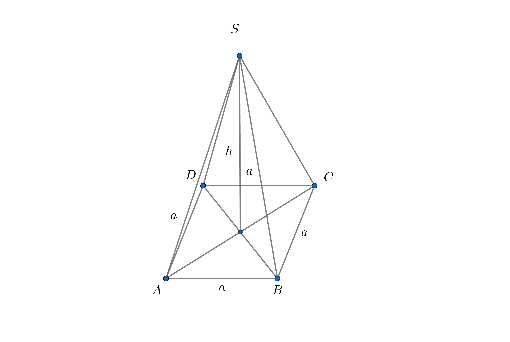
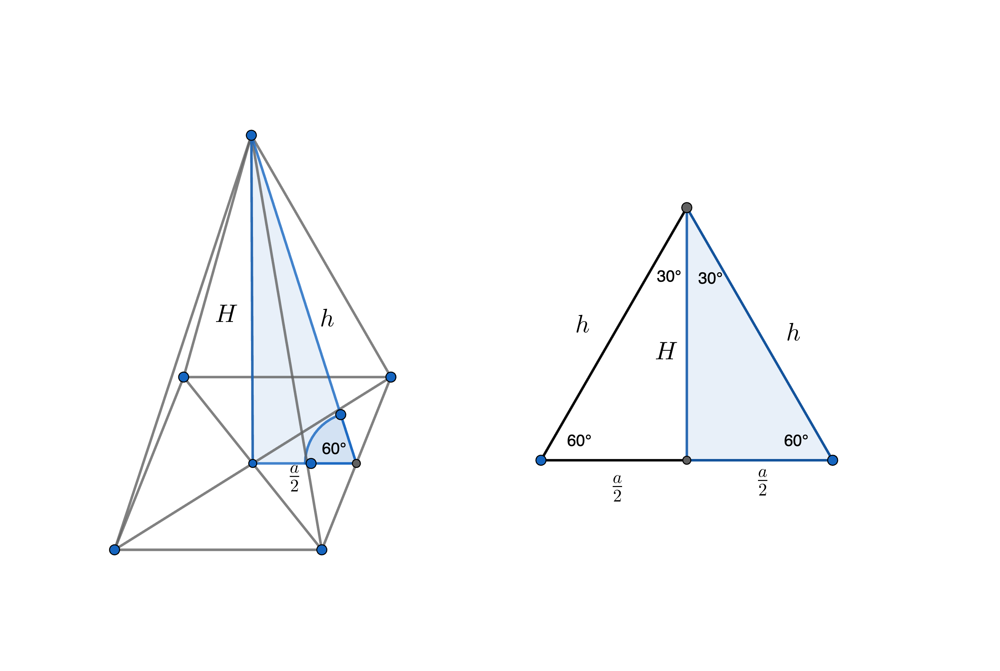

Zapremina pravilne četvorostrane piramide
🎯 Ciljevi lekcije
Posle ove lekcije ćeš znati:
- Kako izračunati zapreminu pravilne četvorostrane piramide
- Kako primeniti formulu \( V = \frac{1}{3} \cdot a^2 \cdot H \) na konkretnim zadacima
- Kako iz datih podataka izračunati visinu piramide
Kako se računa zapremina pravilne četvorostrane piramide
Zapremina pravilne četvorostrane piramide računa se kao trećina proizvoda površine baze i visine piramide.
Površina baze (kvadrata koji predstavlja bazu)
Osnova pravilne četvorostrane piramide je kvadrat. Površina kvadrata može se izračunati pomoću formule:
$$ B = a^2 $$
\( a \) - dužina stranice kvadrata (baze).
Ukupna zapremina piramide
Zapremina pravilne četvorostrane piramide se računa:
$$ V = \frac{(B \cdot H)}{3} $$
\( H \) - visina piramide
Zadaci:
1
Najveća piramida na svetu je Keopsova piramida u Egiptu. Ona u osnovi ima kvadrat
stranice dužine
\( 230 \, \text{m} \), a sadašnja visina joj je približno \( 138 \, \text{m} \). Kolika
je zapremina te piramide?

$$a = 230\,\text{m}$$
$$H = 138\,\text{m}$$
$$V = ?$$
$$V = B \cdot H$$
$$V = a^2 \cdot H$$
$$V = \frac{1}{3} \cdot 230^2 \cdot 138$$
$$V = 2\,433\,400\,\text{m}^3$$
2
Mera ugla između bočne strane i ravni osnove pravilne četvorostrane piramide je \(
60^\circ \). Ako je dužina apoteme
\( 8 \, \text{cm} \), izračunaj zapreminu te piramide.

$$h = 8\,\text{cm}$$
$$V = ?$$
$$a = h = 8\,\text{cm}$$
$$H = \frac{h \sqrt{3}}{2}$$
$$H = \frac{8 \sqrt{3}}{2}$$
$$H = 4 \sqrt{3} \, \text{cm}$$
$$V = \frac{1}{3} \cdot B \cdot H$$
$$V = \frac{1}{3} \cdot a^2 \cdot H$$
$$V = \frac{1}{3} \cdot 8^2 \cdot 4 \sqrt{3}$$
$$V = \frac{256 \sqrt{3}}{3} \, \text{cm}^3$$
📝 Rezime lekcije
- Površina baze: \( B = a^2 \)
- Zapremina: \( V = \frac{1}{3} \cdot a^2 \cdot H \)
- Ključ je primena Pitagorine teoreme za određivanje visine ili stranice osnove iz datih podataka.